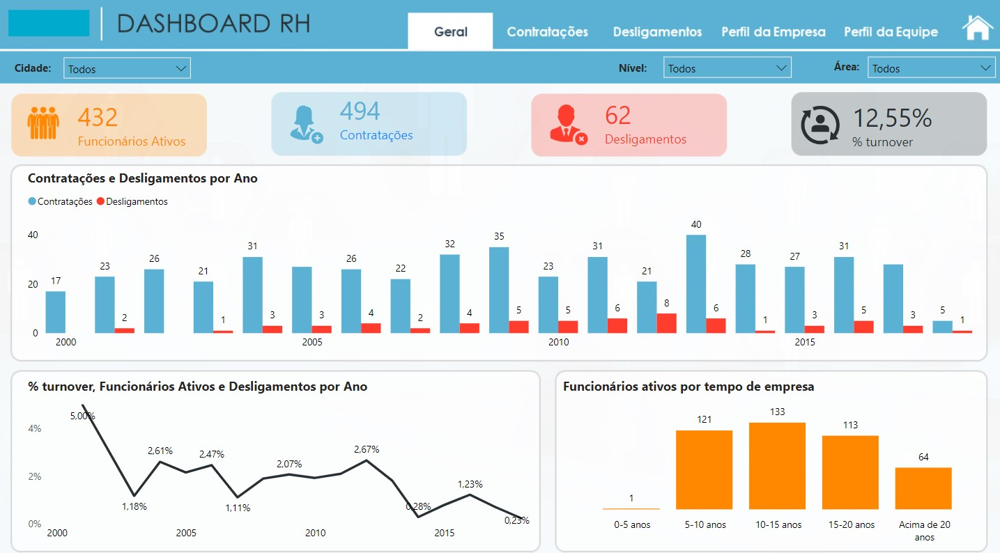
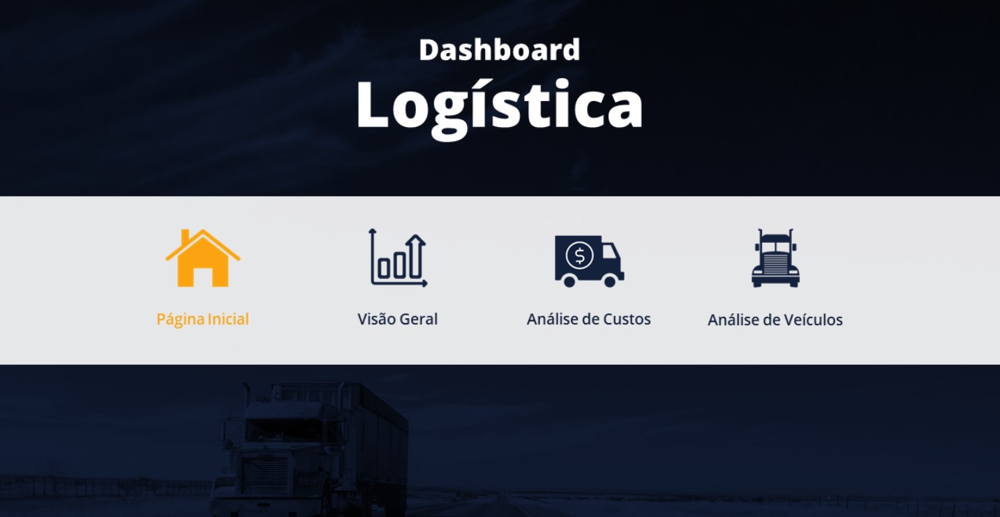
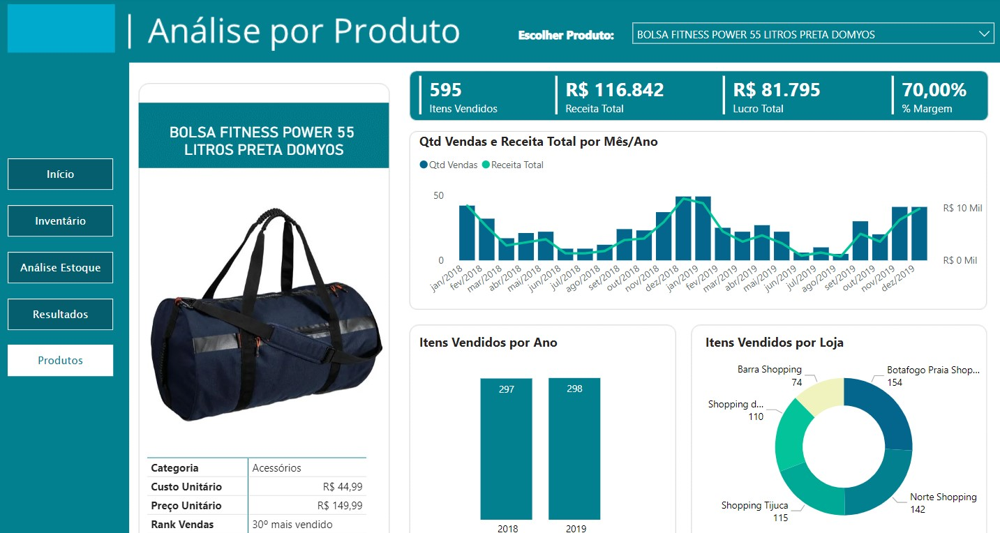
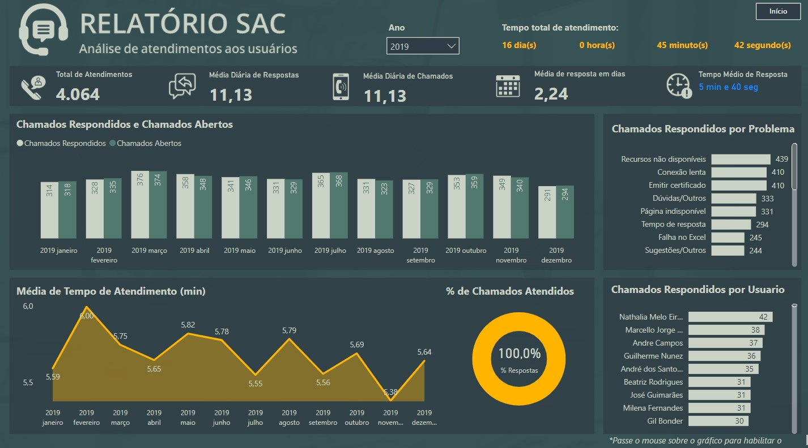

Sobre Mim!
Profissional especializado, com vivência em auditoria financeira no grupo Accor Hotels, Analytics Sênior na Heineken Brasil e atualmente como cientista de dados na Vivo Telefônica São Paulo, desenvolvendo Dashboards automatizados com consulta diretamente no banco de dados e automações personalizadas via N8N. Bacharelado em Administração de Empresas e graduado em Ciência de Dados, com cursos complementares em SQL Server, Pentaho, Power BI, N8N, Python para dados, PowerApps, Power Automate, Excel Avançado e outros diversos cursos dentro da área de projetos, qualidade, Logística e Gestão de pessoas.
Números que Falam
Stack de Tecnologias
Python

SQL
Power BI
Automação
Certificações - Nível Superior
🎓 Bacharelado em Administração de Empresas
Formação Acadêmica Completa
📊 Graduado em Ciência de Dados
Formação Acadêmica Completa
Habilidades
BI & Visualização
Banco de Dados & SQL
Automação & Integração
Linguagens de Programação
Soft Skills
Projetos

Fluxo de Caixa
indicadores de gestão financeira servem para avaliar a saúde financeira de uma empresa, monitorar sua eficiência operacional e apoiar a tomada de decisões estratégicas.
Power BI
Dashboard Armazém
Para empresas que buscam otimizar a eficiência operacional e através de gestão. Foi criado indicadores com chave de desempenho (KPIs) e Métricas inteligentes:
Dashboard Comercial
Esse tipo de análise é para empresas que buscam otimizar a eficiência operacional e através de gestão.
Dashboard de Ação Social
Projeto feito para identificar quais especialidades podemos atuar de acordo com a necessidade e procura e também ter uma visão ampla dos indicadores

Dashboard de Recursos Humanos
👉Clique para visualizar

Dashboard de Logística
Dashboard Financeiro

Dashboard de E-commerce

Dashboard SAC
Controle de Frota
Dashboard em Excel
ETL & Data Transformation
ETL (Extract, Transform, Load) é o coração de qualquer projeto de Business Intelligence. Transformo dados brutos em informações analíticas aplicando regras de negócio, normalização e otimização para Power BI. Explore os casos abaixo.
01. Normalização e Limpeza
RAW → STAGING📋 Contexto
Dados de clientes de múltiplas fontes com inconsistências: nomes com caracteres especiais, telefones em formatos diferentes, emails duplicados.
🎯 Objetivo
Padronizar, limpar e deduplica os dados para garantir integridade na camada de staging.
💻 Query SQL
WITH raw_clientes AS (
SELECT ID_CLIENTE, NOME_CLIENTE, EMAIL,
ROW_NUMBER() OVER (PARTITION BY EMAIL
ORDER BY DATA_CADASTRO) AS rn
FROM RAW.CLIENTES
)
SELECT
ID_CLIENTE,
UPPER(TRIM(REGEXP_REPLACE(
NOME_CLIENTE, '[^a-zA-Z\s]', '')))
AS NOME_CLIENTE,
LOWER(TRIM(EMAIL)) AS EMAIL_LIMPO
INTO STAGING.CLIENTES_LIMPOS
FROM raw_clientes
WHERE rn = 1;Estrutura
- Deduplica por email com ROW_NUMBER()
- Remove caracteres especiais de nomes
- Padroniza email em lowercase
- Auditoria com timestamp
02. Regras de Negócio
STAGING → MODEL📋 Contexto
Dados de vendas brutos. Necessário segmentar clientes, calcular comissões progressivas e identificar inadimplência.
🎯 Objetivo
Aplicar lógica de negócio: segmentação RFM, cálculos derivados e flags de risco.
💻 Query SQL
WITH vendas_agregadas AS (
SELECT c.ID_CLIENTE, c.NOME_CLIENTE,
COUNT(*) AS QTD_VENDAS,
SUM(v.VALOR_VENDA) AS TOTAL_VENDAS
FROM STAGING.CLIENTES c
LEFT JOIN STAGING.VENDAS v
ON c.ID_CLIENTE = v.ID_CLIENTE
GROUP BY c.ID_CLIENTE, c.NOME_CLIENTE
)
SELECT
ID_CLIENTE,
CASE WHEN TOTAL_VENDAS >= 50000
THEN 'VIP'
WHEN TOTAL_VENDAS >= 20000
THEN 'PREMIUM'
ELSE 'PADRÃO' END AS SEGMENTO,
TOTAL_VENDAS *
CASE WHEN TOTAL_VENDAS >= 50000
THEN 0.08 ELSE 0.04 END
AS COMISSAO
INTO MODEL.CLIENTES_ANALISE
FROM vendas_agregadas;✨ Destaques
- Segmentação RFM (VIP, PREMIUM, PADRÃO)
- Comissão progressiva por faixa
- Cálculos pré-computados no ETL
- Agregações multidimensionais
03. Star Schema para BI
MODEL → SEMANTIC📋 Contexto
Dashboards no Power BI exigem dados modelados em estrutura dimensional com hierarquias e cálculos otimizados.
🎯 Objetivo
Modelar em Star Schema, criar métricas pré-computadas e preparar semântica para DAX.
💻 Query SQL
SELECT
v.ID_VENDA,
c.ID_CLIENTE,
p.ID_PRODUTO,
CAST(v.DATA_VENDA AS INT) AS ID_DATA,
v.QUANTIDADE,
v.PRECO_UNITARIO,
v.VALOR_VENDA,
ROUND(v.VALOR_VENDA *
(1 - COALESCE(v.DESCONTO, 0)/100), 2)
AS VALOR_LIQUIDO,
ROUND((v.VALOR_VENDA -
p.CUSTO_UNITARIO * v.QUANTIDADE) /
NULLIF(v.VALOR_VENDA, 0) * 100, 2)
AS MARGEM_PERC
INTO SEMANTIC.FATO_VENDAS
FROM MODEL.CLIENTES c
INNER JOIN STAGING.VENDAS v
ON c.ID_CLIENTE = v.ID_CLIENTE
LEFT JOIN STAGING.PRODUTOS p
ON v.ID_PRODUTO = p.ID_PRODUTO;✨ Destaques
- Estrutura Star Schema
- Chaves numéricas para performance
- Cálculos de margem pré-computados
- Suporta agregações em Power BI
🎯 Integração com Power BI
Dados preparados em SEMANTIC são importados diretamente no Power BI:
- Direct Query / Import: Conexão nativa com tabelas de fatos e dimensões
- Medidas DAX: Cálculos adicionais sobre métricas pré-computadas
- Performance: Filtros no ETL reduzem volume em memória
- Confiabilidade: Lógica centralizada garante consistência entre dashboards
Automações com IA
Automação com N8N e IA
Demonstração de automação inteligente utilizando N8N integrado com modelos de IA avançados. Este projeto mostra como criar fluxos de trabalho automatizados que potencializam a produtividade e reduzem processos manuais.